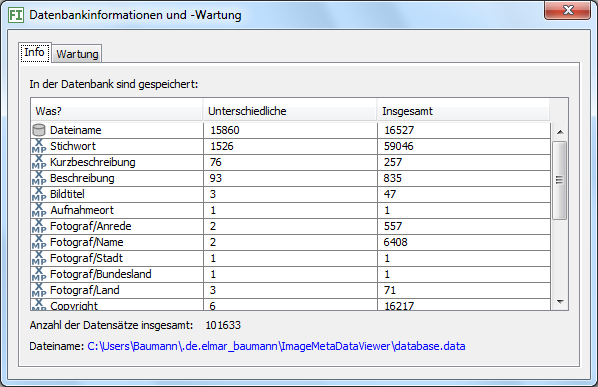
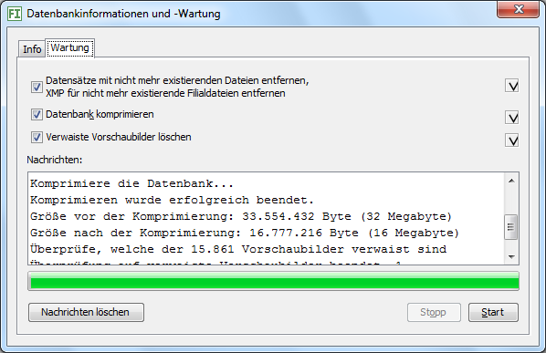

Dieser Menübefehl öffnet einen Dialog mit Informationen über die Datenbank und Möglichkeiten zur Wartung.
Info
Auf dem Info-Kartenreiter sehen Sie, welche Daten enthalten sind in wie vielen Datensätzen. Die Spalte Was zeigt die Art der Daten an, die Spalte Unterschiedliche, wie viele unterschiedliche Daten dieser Art es gibt und die Spalte Insgesamt, in wievielen Datensätzen Daten dieser Art enthalten sind. Beispielsweise könnten Stichwörter in 1.000 Datensätzen gespeichert sein, aber es gibt nur 50 unterschiedliche Stichwörter, falls mehrere Bilder gleichen Stichwörtern zugeordnet sind, was praktisch immer der Fall ist (sofern Sie Stichwörter benutzen). In der Abbildung unten hat die Datenbank 59.046 Datensätze mit Stichwörtern, davon 1.526 verschiedene.
Die Anzahl aller Bilder in der Datenbank stehen neben dem Dateinamen.

Wartung
Der Kartenreiter Wartung bietet an, Datensätze zu entfernen, für die es keine Bilder mehr gibt. Das ist sinnvoll, sonst werden bei Suchen nicht mehr existierende Bilder berücksichtigt.
Das Komprimieren der Datenbank verkleinert ihre Dateigröße. Dies ist in der Regel nicht nötig, kann aber sinnvoll sein nach Programmupdates, bei denen die Datenbank modifiziert wurde oder nachdem Sie sehr viele Metadaten verändert oder gelöscht haben.
Verwaiste Vorschaubilder löschen entfernt Vorschaubilder, für die keine Bilddateien in der Datenbank existieren. Das kann der Fall sein, falls Sie außerhalb JPhotoTagger Bilder verschoben oder löschten. So geben Sie auf der Festplatte nicht benötigten Speicherplatz frei.

Aktualisieren
Dieser Befehl aktualisiert in der Datenbank die EXIF-Daten aller bekannten Bilder. Dazu liest JPhotoTagger erneut alle EXIF-Daten der Bilder und überschreibt mit diesen die alten Datenbankwerte. Hatte ein Bild mit EXIF früher keine EXIF-Daten, werden diese nun in die Datenbank geschrieben.
Das ist auch sinnvoll, falls (erst) in einer neueren Version von JPhotoTagger neue kamera-spezifische Eigenschaften in der Datenbank gespeichert werden, denn automatisch werden die EXIF-Daten erst aktualisiert, falls das Dateidatum des Bilds sich ändert und JPhotoTagger dies bemerkt.
Dieser Befehl aktualisiert in der Datenbank die XMP-Daten aller bekannten Bilder. Dazu liest JPhotoTagger erneut alle XMP-Daten der Bilder und überschreibt mit diesen die alten Datenbankwerte. Hatte ein Bild mit XMP früher keine XMP-Daten, werden diese nun in die Datenbank geschrieben.
Berechnet alle Vorschaubilder neu. Dies ist z.B. sinnvoll, falls Sie ein externes Programm zum Erzeugen der Vorschaubilder benutzen und eine neue Programmversion bessere Ergebnisse erzielt.
Öffnet einen Dialog, Erklärung siehe hier.